ASTROMECH DROID
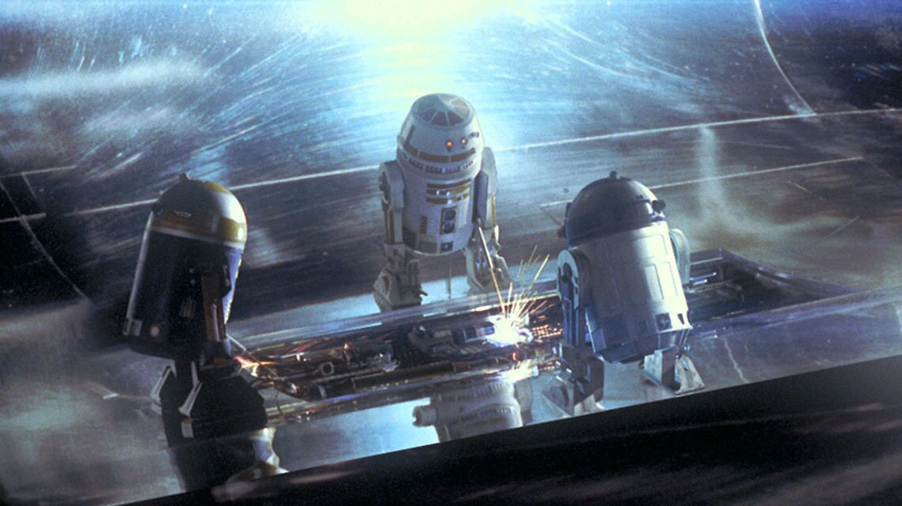
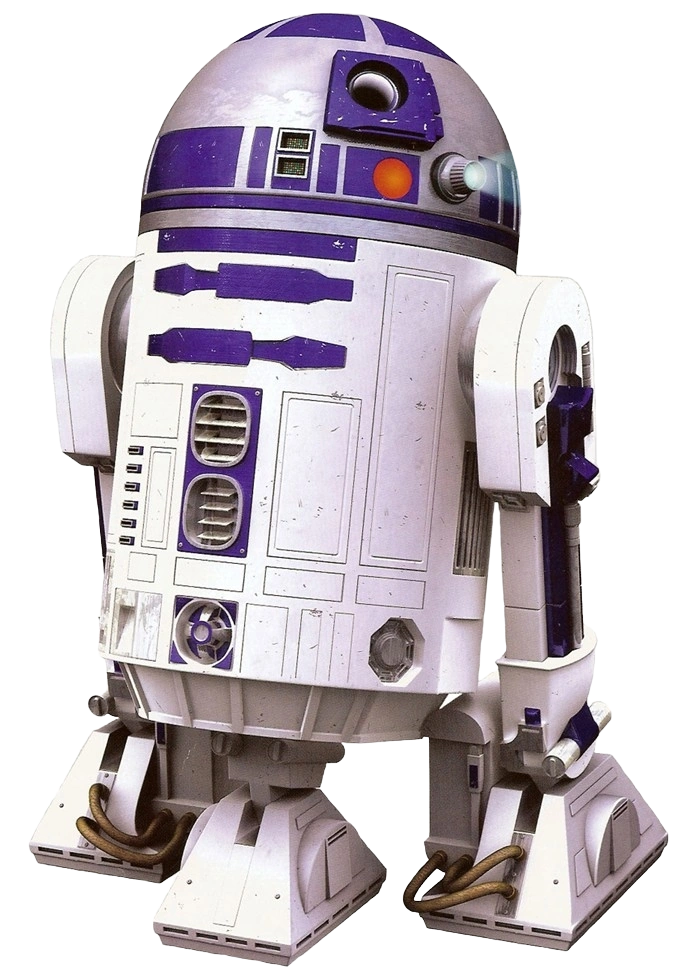
Los droides astromecánicos son una serie de robots utilitarios versátiles
generalmente utilizados para el mantenimiento y reparación de naves estelares y tecnología relacionada.
Estos pequeños droides a menudo están equipados con una variedad de apéndices con puntas de herramientas que
se guardan en compartimentos empotrados. La unidad R2 es un ejemplo popular de un droide astromecánico.
BB UNIT
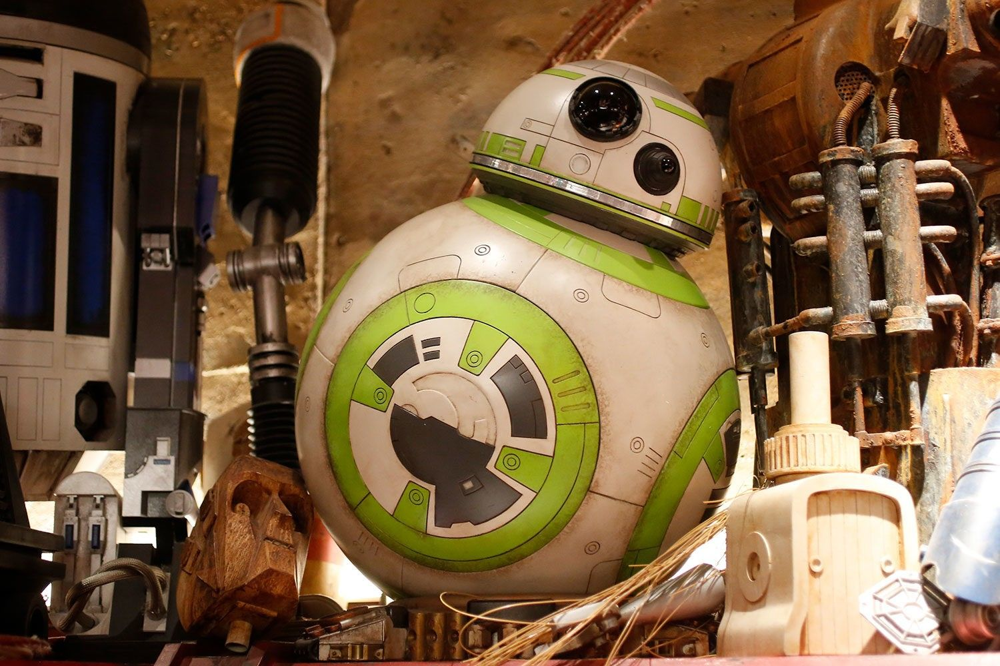
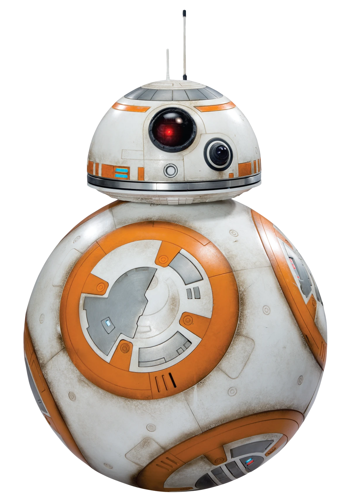
Rodando por los hangares de los puestos de avanzada y las naves capitales, o cómodamente
en los huecos astromecánicos de los cazas X-wing, las unidades BB trabajan incansablemente para mantener las armas
y las naves de la Resistencia en óptimas condiciones de combate
PIT DROID
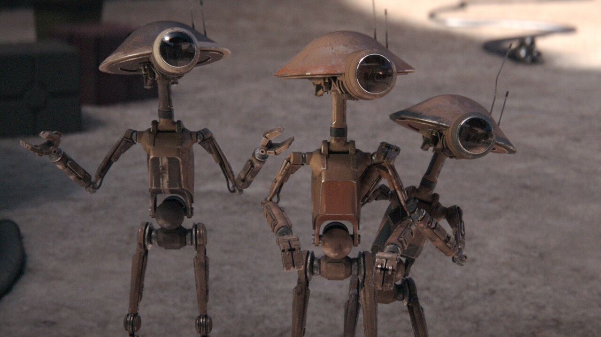
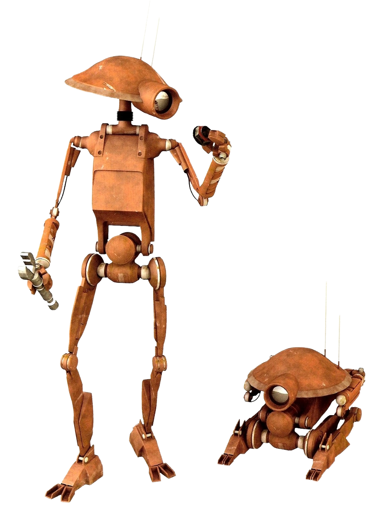
Podracing es extremadamente peligroso, al igual que mantener los vehículos veloces. En el ritmo frenético de una carrera,
la seguridad ocupa un segundo lugar después de ganar. Como tal, los droides de pozo baratos y prescindibles a menudo salen
disparados a la pista de carreras para reparar motores sobrecalentados que aún funcionan sin tener en cuenta su seguridad personal.
Cuando no están en uso, los pit droides se pliegan en un paquete compacto. Saltan a la activación cuando es necesario. Un toque
en la nariz le indica al droide que vuelva a colapsar en modo guardado y descanse.
PROTOCOL DROID
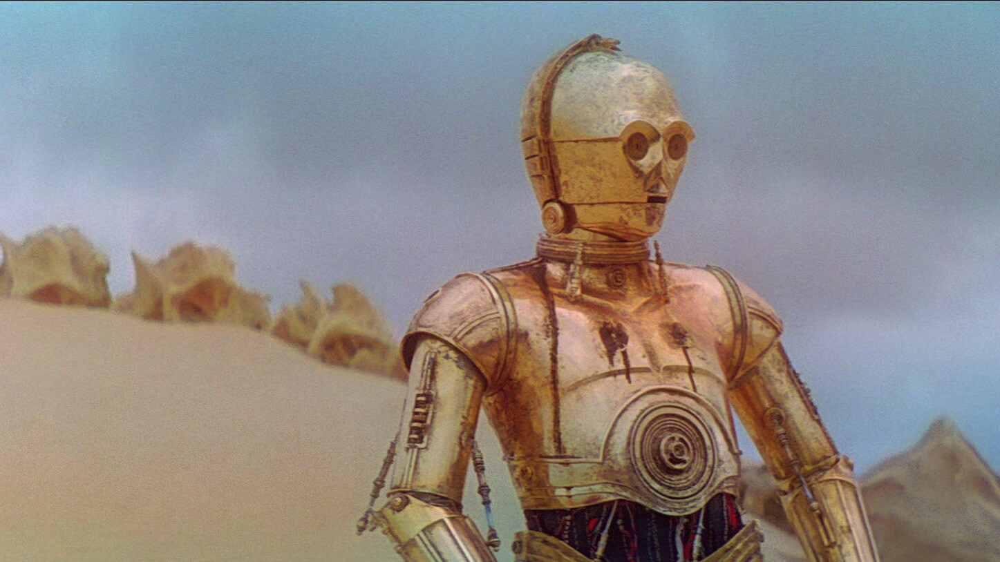

BATTLE DROID
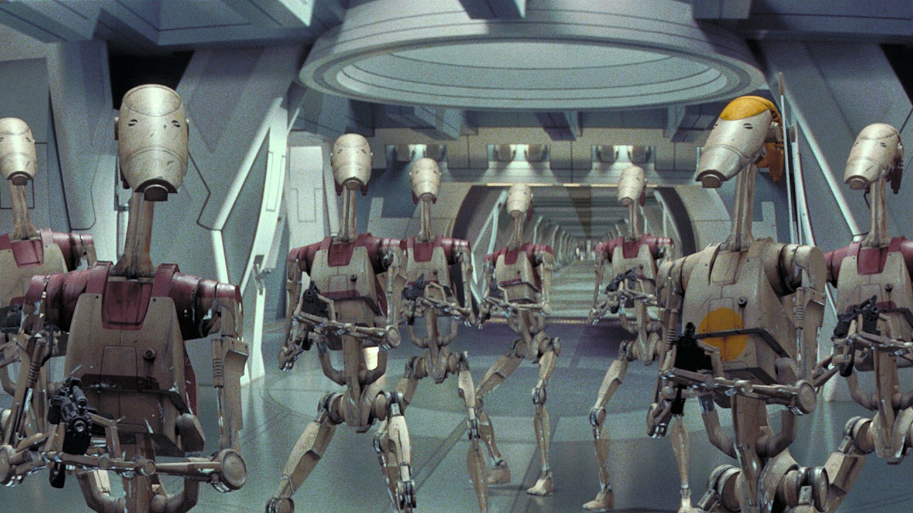
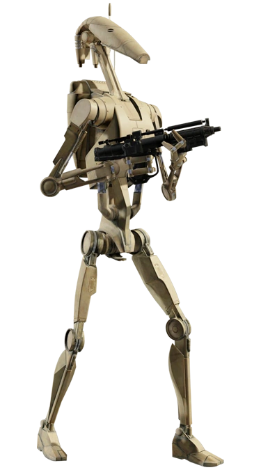
En lugar de usar guerreros de carne y hueso, los Separatistas prefieren soldados leales y sin sentido que son fáciles de controlar.
Las filas sin alma de sus ejércitos están dominadas por droides de batalla B1 altos y delgados construidos como imitaciones mecánicas
de sus diseñadores geonosianos. Los droides de combate pueden ser controlados por centros de mando centralizados, como las enormes naves
de control de droides de la Federación de Comercio, o pueden programarse para una acción independiente. A menudo sufren fallas de programación
que se manifiestan como peculiaridades de personalidad.
2-1B DROID
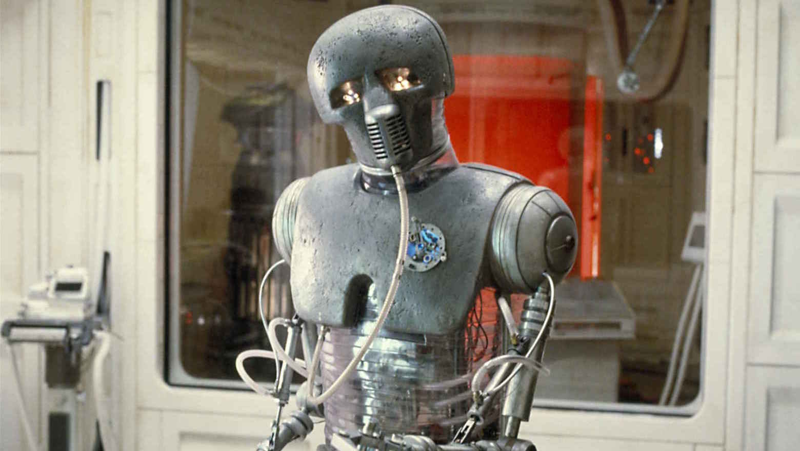
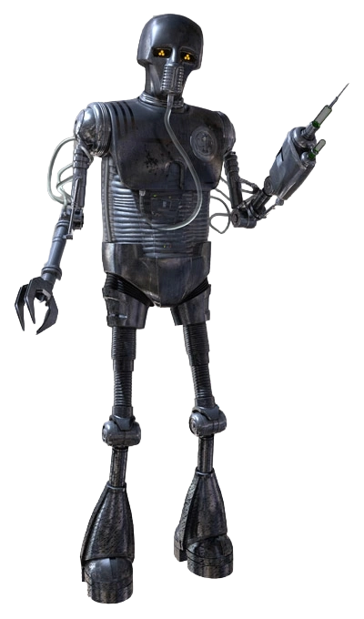
Los droides 2-1B eran maravillas médicas, programados para diagnosticar y tratar heridas y enfermedades
que aquejaban a millones de especies en la galaxia. Los droides 2-1B tenían extremidades modulares que les
permitían usar una variedad de herramientas quirúrgicas y otros instrumentos médicos según las necesidades de sus pacientes..
FA-4 PILOT DROID

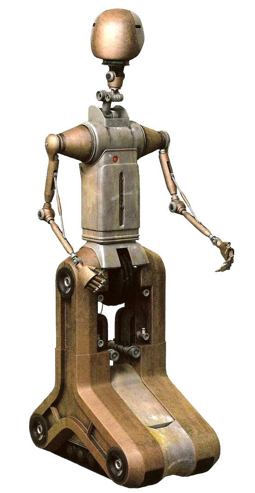
Estos droides piloto con ruedas y cabezas esféricas estuvieron en uso durante la era de la República Galáctica. Eran lo suficientemente
altos como para manejar los controles de muchas naves. El conde Dooku empleó uno para ayudar en los despegues y aterrizajes en su velero
solar. Otros podrían ser vistos en el edificio del Senado Galáctico, ocupados en sus asuntos.
COURIER DROID
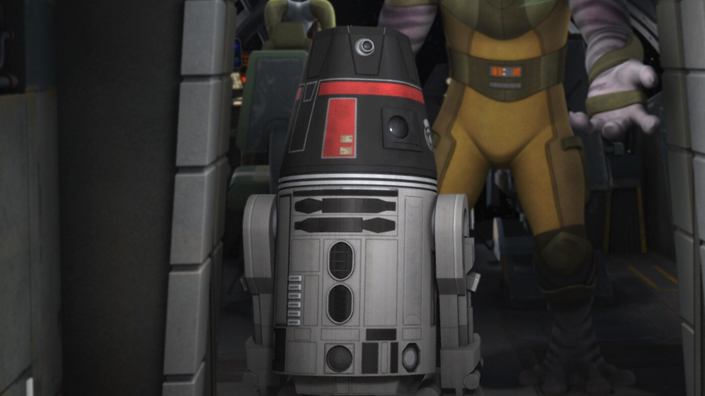
Los droides mensajeros se utilizan para transmitir información de un lugar a otro en lugar de redes. Astromecánicos reutilizados,
los droides mensajeros a menudo presentan marcas especiales para diferenciarlos. Cuando el Gran Moff Tarkin ordenó la destrucción
de la principal torre de comunicaciones de Lothal, el Imperio utilizó droides mensajeros como medio para transportar datos físicamente.